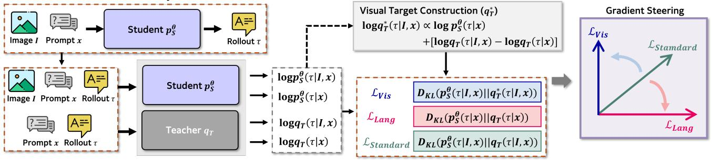

(c) Text-only Benchmark Figure 10(c) Text-only Benchmark Figure 10. Impact of optimization steering across varying levels of visual dependency. Average accuracy comparison between Language Steering, Standard On-Policy Distillation, and Visual Gradient Steering. (a) On High-Visual Dependent benchmarks, prioritizing the visual subspace (VGS) significantly outperforms the baseline, whereas leaning on the language prior actively degrades performance. (b) On Low-Visual Dependent and (c) pure Text-Only benchmarks, performance remains uniform across all methods, confirming that VGS yields gains where visual grounding is the primary bottleneck without compromising the model’s core textual reasoning capabilities.这张图/表用于判断 Decomposed On-Policy Distillation for Vision-Language 的实验收益来自哪里。重点看替换、消融或跨模型设置下趋势是否一致，而不是只看单个最高分。

Generate Rollout from Student Policy Figure 2Generate Rollout from Student Policy Figure 2. Overview of Visual Gradient Steering (VGS). (Left) Given a multimodal query (Image I and Prompt x), we sample a rollout τ from the student policy and compute log-probabilities from both the student and teacher models under multimodal (I, x) and unimodal (x, text-only) contexts. (Middle) We decompose the standard monolithic objective into two distinct components: a Language Prior $( \mathcal { L } _ { \mathrm { L a n g } } )$ that matches the teacher’s text-only distribution, and a Visual Grounding objective $( \mathcal { L } _ { \mathrm { V i s } } )$ that targets a constructed distribution q∗T isolating the teacher’s visual information gain. (Right) Our geometric analysis reveals that standard distillation $( \mathcal { L } _ { \mathrm { { S t a n d a r d } } } )$ acts as a passive compromise between these often orthogonal objectives. VGS explicitly steers the gradient update toward the visual subspace $( \mathcal { L } _ { \mathrm { V i s } } )$ , prioritizing perceptual fidelity over generic language modeling.这张图概括 Decomposed On-Policy Distillation for Vision-Language 的整体方法流程。阅读时先看模块之间传递的训练信号，再看作者如何把目标拆成可优化的子问题。